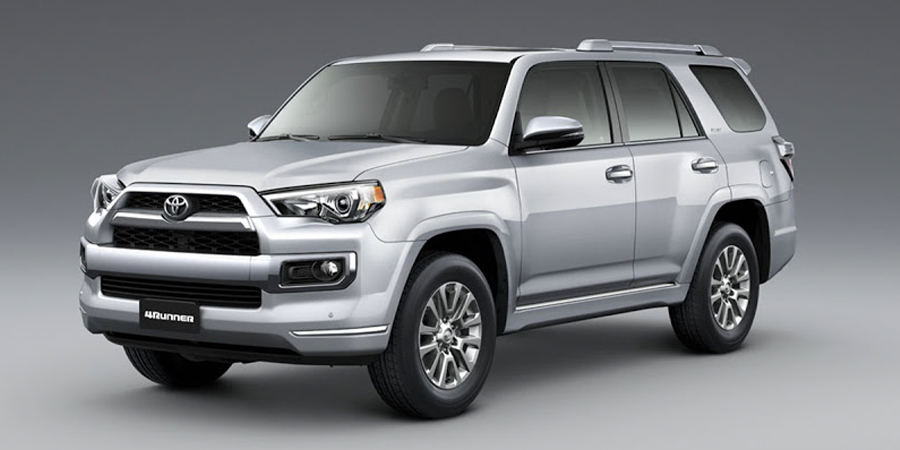
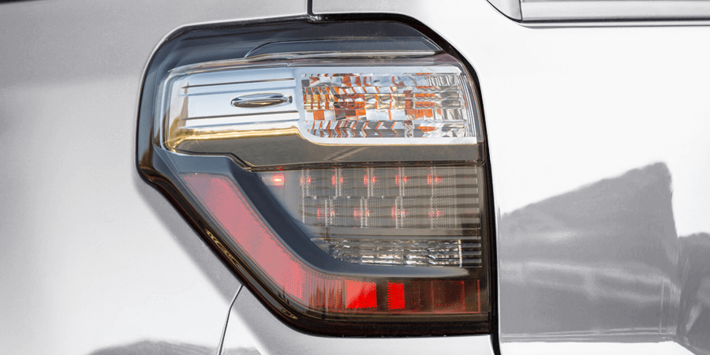
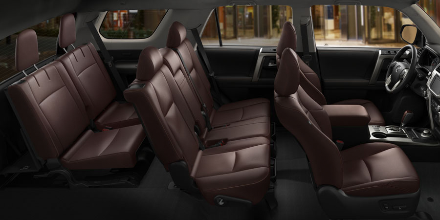
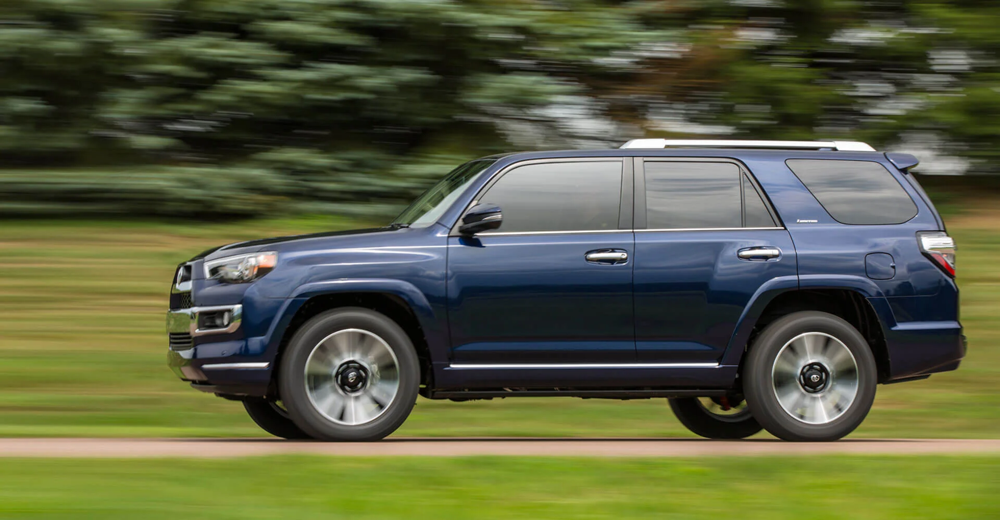
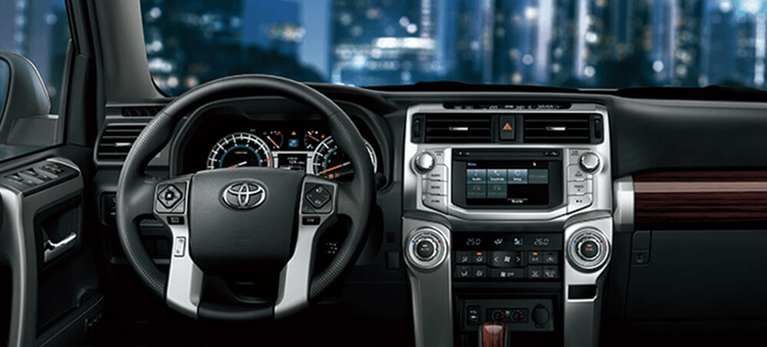

DISEÑO
La Toyota 4Runner te ayuda a dominar tus caminos favoritos. Esta SUV se destaca por sus exclusivas características. Además de su exclusivo diseño frontal, la 4Runner viene con detalles refinados que le brindan su propia personalidad.
FAROS DELANTEROS

La Toyota 4Runner presenta una renovada y agresiva máscara frontal con sólida barra de diseño horizontal. La rudeza del parachoques frontal resalta además por las luces direccionales.
DISEÑO FRONTAL

FAROS TRASEROS
Los faros traseros con luces LED se alinean perfectamente con la cintura del vehículo, resultando en un diseño audaz. La tercera Luz LED de frenos bien ubicada en el vidrio trasero brinda toda la seguridad en la conducción.
Disposición de asientos y filas
Sus asientos cómodos y su versatilidad en el acomodamiento del espacio son suficientes para decidirse por la 4Runner. Con disposición de dos y tres filas demuestra que existe una versión para cada tipo de necesidad
Desempeño
La Toyota 4Runner ha ayudado a conquistar terrenos off-road por más de 30 años gracias su comprobada carrocería montada en el chasis que brinda importantes mejoras en su desempeño.
Equipamiento interior de lujo
En su interior encontraremos todo el confort y el lujo de una SUV, un techo corredizo lunar, un sistema de sonido y aire acondicionado de última tecnología.
Chasis con alma de todoterreno
z
En el corazón de este vehículo con excelente capacidad todoterreno recae en su chasis de pickup de trabajo. Son muy pocas las SUV que se construyen de esta manera. Este elemento es precisamente el que hace que la 4Runner sea más rígida al conducirla en terrenos difíciles.
Motor

Cuenta con un motor gasolina de 4.0L V6 VVTi Dual con 276 caballos de fuerza que provee un desempeño inigualable para cualquier condición de manejo.
Sistemas de asistencia de manejo
La capacidad de circular en cualquier tipo de terreno es extraordinaria pues está equipada con sistemas como el DAC (Asistente de Descenso), HAC (Asistencia para ascenso), control de tracción activa (ATRAC), dependiendo del modelo y un transfer con reductora que aumenta su torque.